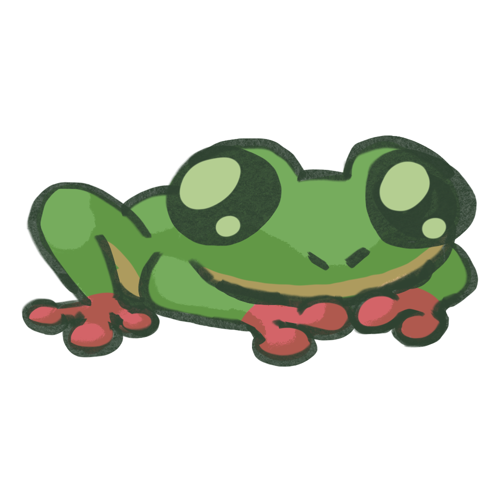
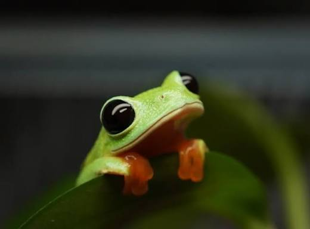
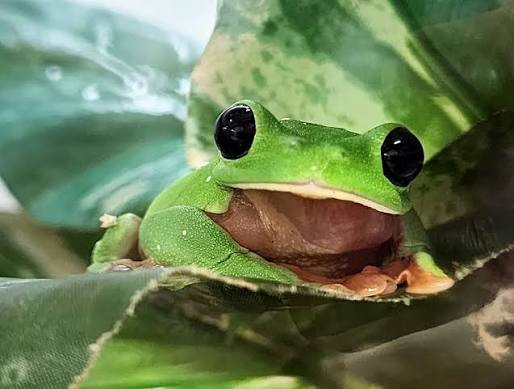
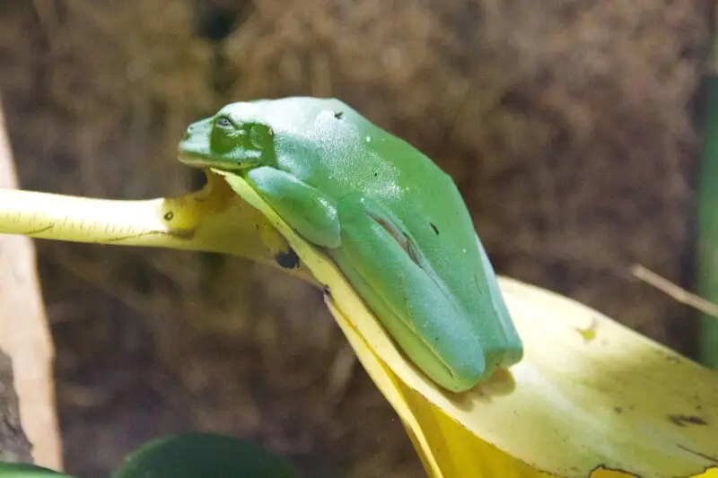

the morelet's tree frog (mtf) is known to be the most polite species nowadays. maybe ever. look.


he will ask for permission before hopping onto your shoulder. men wish to master this level of consent.
he also has a very flat head:

and i think that's neat.
also look at how he sleeps:

no frog, only leaf.
lastly, here's a video of him being woken up (sacrilege) and picked up.